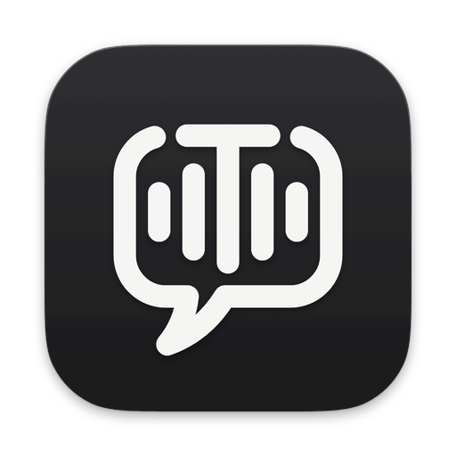

Turn your meetings and dictation into text files your AI can read.
Transcripted captures what's said and saves it as a plain Markdown file on your Mac.
Download for MacFree · Open source · Transcribes on your Mac
- Records meetings
- Types what you say
- Knows who's talking